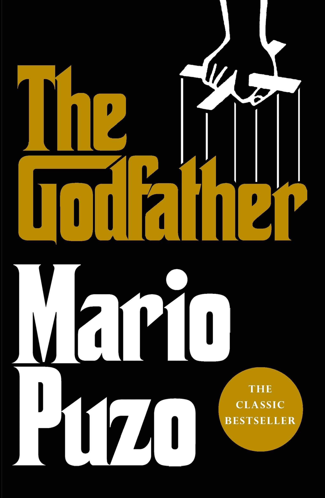

The Godfather (novel)
The Godfather is a crime novel by American author Mario Puzo. Originally published in 1969 by G. P. Putnam's Sons, the novel details the story
of a fictional Mafia family in New York City (and Long Island), headed by Vito Corleone, the Godfather. The novel covers the years 1945 to 1955
and includes the back story of Vito Corleone from early childhood to adulthood.
(source)

The Family Corleone
The Family Corleone is a 2012 novel by Ed Falco, based on an unproduced screenplay by Mario Puzo, who died in 1999.[1] It is the prequel to Puzo's
The Godfather. It was published by Grand Central Publishing and released May 8, 2012.[2] It is the fifth and final book published in The Godfather
novel series but, being a prequel, it is chronologically set first.
(source)

The Book Thief
The Book Thief is a historical fiction novel by the Australian author Markus Zusak, and is his most popular book. Published in 2005, The Book Thief became an
international bestseller and was translated into 63 languages and sold 16 million copies. It was adapted into the 2013 feature film, The Book Thief.
The novel is about the adventures of Liesel Meminger in Germany during a time of war. By personifying "Death" as a tangible thing, the novel narrates a unique
perspective into the world of the victims of the war. There are many tangible themes throughout the entire story.
(source)